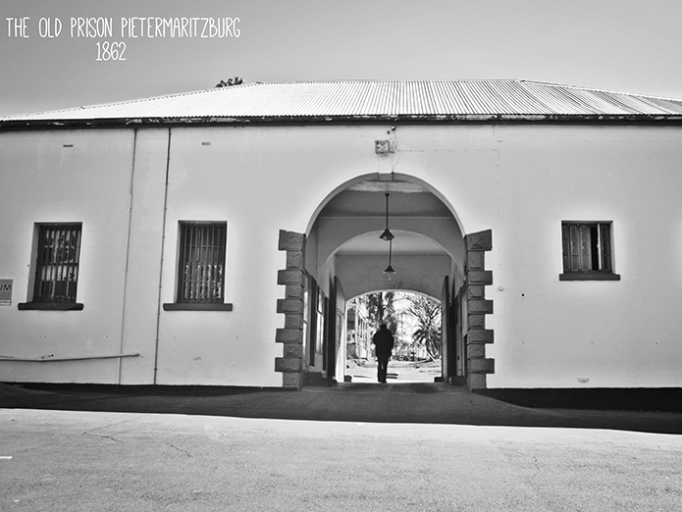
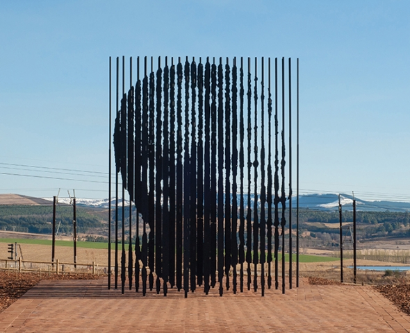
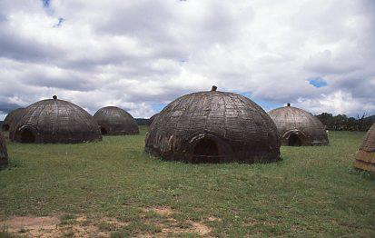

Historical Places
THE OLD PRISON

The Old Prison can count 127 years of history including the Colonial times, Apartheid, the Liberation struggle, the political struggle through to the dawn of a democratic South Africa in 1994. Built in 1862, the site has housed people of national and international renown including King Dinuzulu, Harry Gwala, Moses Mabhida, Kasturba Gandhi (Gandhi’s wife), Peter Brown, A. S. Chetty, Omar Essack and Derick Marsh
The first cell block has been declared a National Monument and is one of the oldest buildings in Pietermaritzburg. The Old Prison is also part of The Freedom Route.
NELSON MANDELA CAPTURE SITE

Mr Mandela had been travelling in disguise as the chauffeur of the car he drove, and was on the R103 road between Durban and Johannesburg. Apartheid police had been hunting Nelson Mandela down for 17 months and, as he passed along this stretch of road, they were finally able to capture and arrest him. This marked one of the most significant moments in the history of the Apartheid era, as well as the future of this country.
The monument in honour of Nelson Mandela and his efforts is a dramatic representation of the multi-faceted influences and the nature of a single human being that had an enormous effect on the identity of a nation.
DINGAAN’S KRAAL

Situated in the Babanango district in Umgungundlovu, just over two and a half hours drive from Durban, this gravesite pays homage to former Zulu King Dingaan who retreated in a battle against his brother, Mpande.
King Dingane was forced to flee to the Hlatikulu forests in the Lebombo mountains, where he was murdered by a group of Swazi Nyawo warriors. The gravesite is the former capital of King Dingaan’s Zulu Kingdom which lasted from 1828 to 1840.